All images are protected by copyright. Consult the copyright page for more information. No images may be reproduced without the consent of the respective copyright holders unless mentioned otherwise.
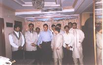 The wedding baraat was to be later in the evening, so we all got ready quickly. It took a little while for everyone to settle down, but we were still prepared 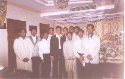 well in advance. The drivers were a little late, so we got there well after the scheduled time, but nothing had started yet. It was not a long drive, but interesting. We sent Amit, Mehta, Balaji and some of the other guys in the Qualis with the girls, while the rest of us guys took the Sumo. Judging from Amit and Mehta's faces when they got down, the chatter was too much. We on the other hand had a party in the car. Once we'd got ahead of the others, we started dancing in the back seat.
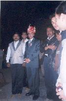 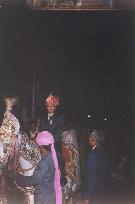 We met with Pankaj, and he showed everyone his knife. He then had to get ready, so we all moved to the terrace to have some snacks. Yeah, it was good. Kachoris, aloo chaat (or something like that), ras malai and more. I think JJ may have had the masala dosa. Most of us stuck with stuff we don't get back home.
By then it was time for the baraat to start, so we all moved down and waited for Pankaj to get on his horse. Pankaj was pretty quiet throughout - but that's the way he always is. He rode some of the way on his own, then his little cousin (I think) wanted to ride with him, so he sat in front of Pankaj for the rest of the trip.
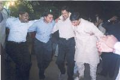 Most of the guys danced at the head of the procession. I danced a bit, but not too much. Tried to get a few photos of the show, but they haven't come out very well. Have a look for yourself:
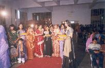 Once we'd got to the wedding hall, everyone was garlanded. Everyone except 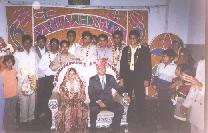 Pankaj that is. Pankaj had to first fight his way into the hall. He had a small branch in lieu of a sword with which he had to defeat the gatekeeper, in order to advance through the gates.
Once Pankaj had gotten inside, and taken his place, it was Sarita's turn to join him. Piyush - Pankaj's brother - took her place instead and demanded that she pay some price in exchance for the seat. After much negotiations from relatives, he relinquished his place to her.
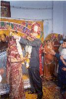 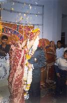 Once that was done, it was time for the couple to be garlanded. The wedding had still not started btw. A short while later, we decided to wish the couple and present them with their gift. We greeted Sarita with a, "Pranaam bhabi saa", and Pankaj with a, "Ram Ram Saa", but chose to defer congratulatory comments until after they had actually tied the knot.
That done, it was time to eat. Dinner was started with some hot, and really
good Tomato Soup with chunks of butter floating around in it. My mouth waters
every time I think of it. There were other liquids flowing in regions behind
parked buses, but being the good boys that we are, we kept some distance from
those areas. 
Dinner included Pani Puri - that's where I started - and the usual vegetarian dishes. Paneer, daal, churma, dahi wada, and much much more. There were rotis too - all types and puris as well. Finally there was badaam (almond) milk to wash it all down.
We took some time off to get some shut-eye before the wedding started. The 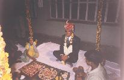 actual ceremony started after midnight. To start, Pankaj joined the Pujari and his TA. This picture looks so much like that cellphone advt. where they guy's waiting for his bride to arrive.
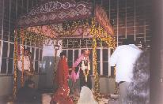 The ceremony commenced and went on and on. No sign of Sarita. After a while Sarita's parents were asked to join in, and again it went on for quite some time before Sarita could join in.
They then exchanged promises to each other, though we couldn't make out what these promises were. Finally, were the seven rounds around the fire.
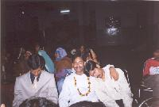 It was nearing 2am by now, and though most of us stayed awake throughout, some could not. A group of ladies sang chants in the back of the hall, and the wedding proceeded in front. We were lucky to be spared snoring from the centre.
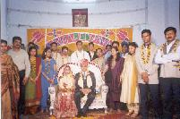 Vivek Mehta explained that the wedding is held at night because of tradition. In the past, if a wedding was held during the day, dacoits would raid and steal all the gold and jewellery. At night the wedding could be held in secret so only invitees knew about it.
He also said that in Rajasthani custom, there are chants for every occassion, and most older women still carried that custom, but younger girls didn't know the words.
The wedding proceeded smoothly. Everyone was happy. Especially Joju, who was in very high spirits. It was nearing 3am when we decided to leave. Only one vehicle was available at the time, so half of us left, while Nallur, Jacob, Joju, and most of the other guys waited for the second one to arrive.
The next day most folks returned to Mumbai. It was also the start of the journey of the four.
{kind=link}
{kind=link}
{kind=link}
{kind=link}
{kind=link}
{kind=link}
{kind=link}
{kind=link}
{kind=link}
{kind=link}
{kind=link}
{kind=link}
{kind=link}
{kind=link}
{kind=link}